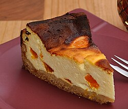

Aunque actualmente se relaciona con Estados Unidos, la tarta de queso tiene su origen en la Antigua Grecia, donde se elaboraba con queso fresco, harina y miel, y se consumía incluso como alimento energético para los atletas. Más tarde, los romanos adoptaron esta receta y la difundieron por Europa, donde cada región la fue adaptando a sus ingredientes y tradiciones, dando lugar a la variedad de tartas de queso actuales.
Aunque la New York Cheesecake fue durante mucho tiempo la más popular, actualmente la tarta de queso se ha reinventado con numerosas variedades. Se utilizan diferentes tipos de queso, como el de cabra, oveja, ricotta o mascarpone, y se experimenta con sabores como pistacho, chocolate, caramelo, Oreo, turrón, café y distintas frutas, creando nuevas combinaciones de sabores y texturas.